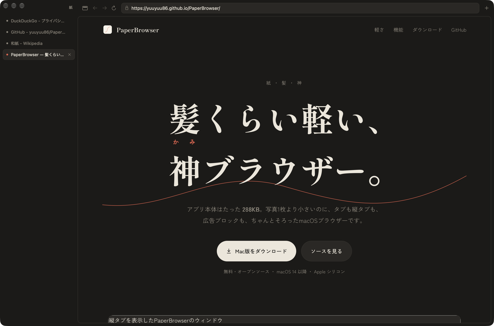

アプリ本体はたった 288KB。写真1枚より小さいのに、タブも縦タブも、広告ブロックも、ちゃんとそろったmacOSブラウザーです。
無料・オープンソース ・ macOS 14 以降 ・ Apple シリコン

Chromiumのような描画エンジンを同梱せず、macOSに最初から入っているWebKitをそのまま使います。だから、アプリそのものはほぼ「紙一枚」です。
M シリーズ Mac・macOS 27 で実測。ページの表示にはこのほかにWebKitのプロセスが使われ、量は開いているページによって変わります。
Swiftのファイルはひとつ、外部ライブラリはゼロ。和紙の色をした、静かな画面です。
読み込み状況は、アドレスバーの下を走る一本の朱色の線だけ。見ていないタブは自動で眠ります。
サンドボックス、HTTPS優先、詐欺サイト警告。見えないところで、きちんと守ります。
サイドバーの縦タブと、上に並ぶ横タブを ⌃⌘S でいつでも切り替え。
5分見ていないタブはメモリから外れ、戻ると読み込み直します。メモリが足りなくなると、すぐに休止します。
国内外の主な広告・追跡ドメインへの読み込みを止めます。ページは軽く、静かに。
http のページは自動で https に切り替え。安全でない接続は、確認してからでないと開きません。
App Sandbox と Hardened Runtime で動作。ブラウザーがMacの他の場所に勝手に触れません。
閉じれば何も残りません。閲覧データの一括消去もメニューからすぐ。
ダウンロードは「ダウンロード」フォルダへ。勝手に開くことはありません。
ページ内検索、拡大縮小、印刷、フルスクリーン、スワイプで戻る、⌘クリックで裏タブ。
無料・オープンソース(MIT)。macOS 14 以降、Apple シリコン Mac に対応。
git clone https://github.com/yuuyuu86/PaperBrowser.git
cd PaperBrowser && ./build.sh